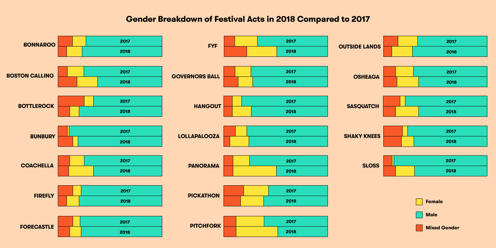

In 2019, BBC Music polled over 100 critics to name their personal top five hip-hop tracks of all time. To the 310 songs the critics named, the poll awarded 10 (respectively 8,6,4,2) points to a song for being someone's first (respectively second, third, fourth, fifth) choice and summed these points to give each track a single score. The dataset BBC Music released had two additional features for each track: the year it was released and wether the artist was male, female, or a combined act. I have chosen to visualize these features in an interactive scatterplot that lets you select two of these features at a time to compare.
Now before diving into the results, I will say that I am of the opinion is no such thing as "good taste" or "bad taste", only your ability to insightfully reflect upon your preferences and articulate why they are the way they are. To that end, I find reducing the process of reviewing music to a scalar valued function strips away most of the value their work. What follows must be understood as a very coarse picture of the genre, with no argument to back its inherent subjectivity. Because of this, I have tried to provide you the next best thing: the ability to listen to each track as you go along and form opinions for yourself.
One thing that's worth discussing is the degree of consensus amongst the poll's respondents. Since the responses could have contained anywhere from 5 tracks (perfect consensus) to 500 tracks (no consensus whatsoever), the fact that there were 310 indicates there was some ammount of agreement, but also a strong degree of diversity in tastes and opinions. We can also see this in the scatterplot, where if we sort by (points, points) there are a small number of high scoring outliers where consensus emerged, and a much larger cluster of lower scoring tracks, representing the plurality of tastes. Of the 310 tracks selected, there were 207 unique artists, meaning some artists had multiple tracks which some critics considered to be the best of all time. This raises the interesting possibility that were the question rephrased as "Who are the 5 greatest hip-hop artists of all time?" we could have expected considerably more agreement.
The next aspect I'll touch on is the distribution of the responses over time. Sorting by (year, points) on the scatterplot, we can see that the highest scores from the poll appear to be concentrated between 1980 and 1995. From my own experience following music, I've know that oftentimes individual artists or even individual tracks can have a profound impact on shaping a new genre for decades to come, so it is no surpise and a nice sanity check that this pattern showed up in the critics' responses. We also see that the dataset is the most dense between 1990 and 2005 (this can be confirmed by sorting by (year, year)). I'm not exactly sure how to interpret this. One possible explanation would be that as the genre itself grew in size and popularity, artists began to carve out their own stylistic niches and expiriment with taking their sound in new directions. Such a stylistic diversity would presumably generate a diversity of critical opinions with it. That said, I can't rule out other factors, such as the average age of the critics polled, or perhaps a hesitiancy on their part to give more recent tracks the superlative "greatest of all time".
Sorting by (points, gender) we see that of the 310 tracks selected, a mere 23 were recorded by all-female hip-hop artists, and a mere 20 were recorded by combined male and female acts. Furthermore, every single track that recieved a score of 40 or higher, was recorded by a male artist. Moreover, sorting by (year, gender) we see that these proportions were relatively stable over the timeframe being depicted. BBC Music wrote a followup piece on this striking disparity and considered possible explanations for "why hip-hop continues to shut women out". Two contributing factors the article cites are that "historically, men appear to listen to rap music more than women" and that the people in the music industry who "have control over who receives publicity and financial backing" are predominatly men. To investigate these two hypotheses, I consulted a 2018 article from Pitchfork looking at the gender balance of music festival bookings in 2017 versus 2018. As their findings (reproduced below) show, a similar disparity exists beyond just the hip-hop genre. This lends credibility to the argument that supporting female artists means having women represented behind the scenes in the music industry as well.
Credit: Rob Mitchum and Diego Garcia-Olano, Pitchfork
To conclude, I think it bears mentioning the things these data cannot tell us. Just as song rankings offer no insight as to why a critic found them significant, these demographic stats can't speak for the obstacles female artists face in the music industry. I was surprised that neither the BBC Music followup nor the Pitchfork article bothered to interview any female artists to how gender has has an impact on their careers as professional musicians. Were I to continue to investigate this story, this is the direction I would take first, as hearing a plurality of first hand experiences could yeild insights that these data do not. This brings me to another point: though gender is neither a binary nor a monolith, treating it as a boolean or catagorical variable in a data graphic represents it as such. This stood out to me immediately in Pitchfork festivals graphic, where several of the festivals listed had artists perform who openly identify as nonbinary or gender non-conforming, yet the graphic only has labels for 'Male', 'Female', and 'Mixed'. While data can yeild new insights on certain issues, it can have a flattening effect on others. It can enhance, but not replace thourough reporting and thoughtful writing.